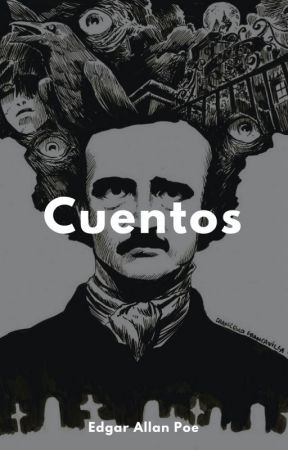
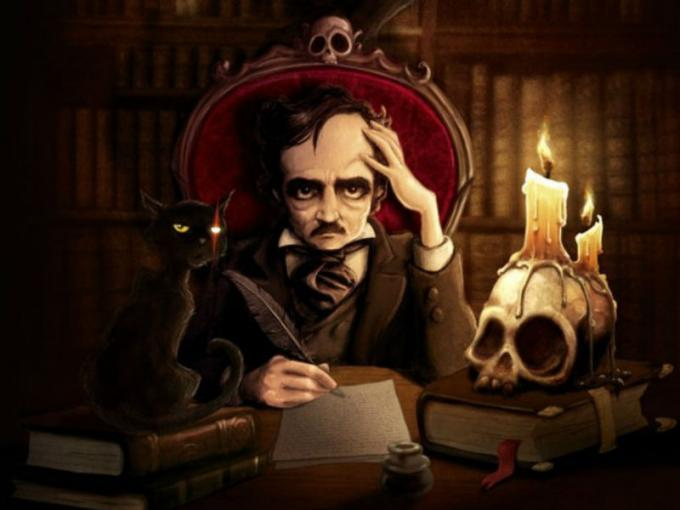
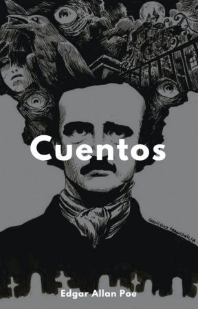
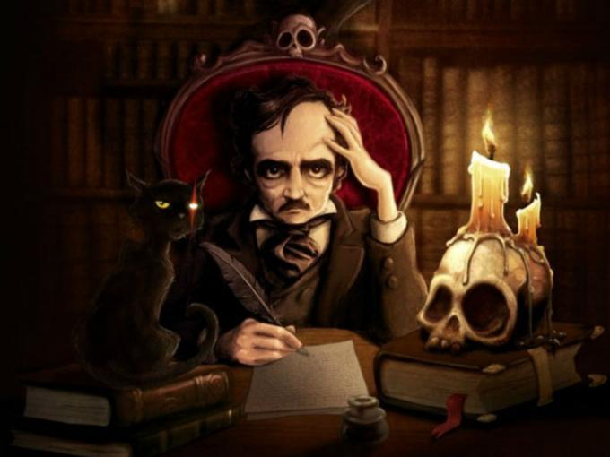

... Y las gentes se fueron pisando sobre sus diez dedos, llenas de asombro (Sátiras del obispo Hall)
Hoy —vale decir fui— un gran hombre; no soy, sin embargo, ni el autor de junius ni el hombre de la máscara de hierro. Puede creérseme que mi nombre es Robert Jones y que nací en alguna parte de la ciudad de Fum-Fudge.
La primera acción de mi vida consistió en tomarme la nariz con ambas manos. Mi madre vio esto y me llamó genio; mi padre lloró de alegría, regalándome luego un tratado de Nasología. Me lo aprendí antes de usar los primeros pantalones.
Comencé a abrirme camino en esta ciencia y no tardé en comprender que si un hombre disponía de una nariz lo suficientemente conspi cua le bastaría andar detrás de ella para llegar a convertirse en un «león» social. Pero no me limitaba a atender solamente a la teoría. Todas las mañanas aplicaba a mi proboscis un par de tirones y me enviaba al coleto media docena de tragos.
Cuando llegué a la mayoría de edad, mi padre me invitó cierto día a entrar en su despacho.
—Hijo mío —manifestó cuando nos hubimos sentado—.
¿Cuál es la finalidad esencial de tu existencia?
—Padre —contesté—, es el estudio de la Nasología.
—¿Y qué es la Nasología, Robert?
—La ciencia de las narices, señor —contesté, amostazado.
—¿Y puedes decirme cuál es el significado de una nariz?
—Una nariz, padre mío —dije, grandemente aplacado—, ha sido diversamente definida
por unos mil autores diferentes. (Aquí saqué el reloj y lo consulté.) Es casi mediodía, es
decir, que tendremos tiempo de mencionarlos a todos antes de medianoche. Comencemos,
pues: La nariz, según Bartolinus, es esa protuberancia, esa saliente, esa excrecencia, esa...
—Ya basta, Robert —me interrumpió aquel excelente caballero—. Me quedo estupefacto ante la extensión de tus conocimientos. Me pasmas, palabra de honor. (Aquí cerró los ojos y se llevó la mano al corazón.) ¡Acércate! (Aquí me tomó del brazo.) Tu educación puede considerarse como terminada... y es tiempo de que te arregles por tu cuenta. Nada mejor podrías hacer que limitarte a seguir a tu nariz... así... así... y así... (Aquí me echó a puntapiés escaleras abajo.) ¡Vete de mi casa, pues, y que Dios te bendiga!
Como sentía dentro de mí el divino afflatus, consideré este accidente más afortunado que otra cosa. Resolví guiarme por el consejo paterno. Decidí seguir a mi nariz. Le di uno o dos tirones y escribí al punto un folleto sobre Nasología. Toda Fum-Fudge entró en conmoción.
—¡Genio maravilloso! —dijo el Quarterly.
—¡Fisiólogo soberbio! —dijo el Westminster.
—¡Un hombre inteligente! —dijo el Foreign.
—¡Magnífico escritor! —dijo Edinburgh.
—¡Pensador profundo! —dijo el Dublin.
—¡Grande hombre! —dijo el Bentley.
—¡Alma divina! —dijo el Fraser.
—¡Uno de los nuestros! —dijo el Blackwood.
—¿Quién podrá ser? —dijo la señora Marisabidilla.
—¿Quién podrá ser? —dijo la primera señorita Marisabidilla.
—¿Quién podrá ser? —dijo la segunda señorita Marisabidilla.
Pero yo no prestaba atención a esas gentes. Todo lo que hice fue entrar en el estudio de
un artista.
La duquesa Fulana posaba para su retrato. El marqués Mengano se ocupaba del perrito de la duquesa. El conde de Zutano jugaba con sus Frasquitos de sales. Su Alteza Real Perengano inclinábase sobre la silla de la duquesa.
Acerquéme al artista y levantó la nariz.
—¡Oh, cuan hermosa! —suspiró su Gracia.
—¡Oh, rayos! —susurró el marqués.
—¡Oh, qué repugnante! —gruñó el conde.
—¡Oh, qué abominable! —bramó su Alteza Real.
—¿Cuánto quiere usted? —preguntó el artista.
—¡Por su nariz! —gritó su Gracia.
—Mil libras —dije, tomando asiento.
—¿Mil libras? —repitió
el artista, pensativo.
—Mil libras —dije.
—¡Hermosa! —murmuró él, extático.
—Mil libras —dije.
—¿La garantiza usted? —preguntó, colocándola de modo que le diera la luz.
—La garantizo —contesté, soplando con fuerza por ella.
—¿Es completamente original? —inquirió, tocándola con reverencia.
—¡Hum! —dije, retorciéndola.
—¿No se han sacado copias de ella? —interrogó, examinándola con un microscopio.
—Ninguna —dije, alzándola.
—¡Admirable! —pronunció, tomado completamente de sorpresa ante la belleza de la maniobra.
—Mil libras—dije.
—¿Mil libras? —dijo él.
—Precisamente —dije.
—¿Mil libras? —dijo él.
—En efecto —dije.
—Las tendrá usted —declaró el artista—. ¡Qué pieza tan perfecta!
Me entregó un cheque de inmediato y se puso a dibujar mi nariz. Alquilé un departamento en la calle Jermyn y envié a Su Majestad la nonagesimonovena edición de mi Nasología, con un retrato de la proboscis. Aquel pobre insignificante libertino, el Príncipe de Gales, me invitó a cenar.
Todos éramos «leones» y recherchés.
Había un platónico moderno. Citó a Porf
irio, a Yámblico, a Plotino, a Proclo, a
Hierocles, a Máximo Tirio y a Siriano.
Había un defensor de la perfectibilidad humana. Citó a Turgot, a Price, a Priestley, a
Condorcet, a De Staël y al «Estudiante Ambicioso de Mala Salud».
Estaba Sir Paradoja Positiva. Hizo notar que todos los locos eran filósofos, y que todos los filósofos eran locos.
Estaba Ético Estético. Habló del fuego, la unidad y los átomos; del alma bipartita y preexistente; de la afinidad y la discordia; de la inteligencia primitiva y las homeomerías.
Estaba Teología Teólogo. Habló de Eusebio y de Arrio; de la herejía y el concilio de Nicea, del puseyismo y el consustancialismo, del homousios y del homouioisios.
Estaba Fricassée del Rocher de Cancale. Mencionó el muritón de lengua roja, las coliflores con salsa velouté, la ternera à la St. Menehoult, la marinada à la St. Florentin y las jaleas de naranjas en mosaïques.
Estaba Bíbulo O’Barril. Se refirió al Latour y al Markbrünnen, al Mousseux y al Chambertin, al Richbourg y al St. George, al Haubrion, Leonville y Medoc, al Barac y al Preignac, al Grâve y al Sauternes, al Lafitte, al St. Peray. Meneó la cabeza ante el Clos de Vougeot, y, cerrando los ojos, nos dijo la diferencia que hay entre el jerez y el amontillado.
Estaba el Signor Tintontintino, de Florencia. Disertó sobre Cimabue, Arpino, Carpacio y Argostino, de la melancolía de Caravaggio, de la amenidad de Albano, de los colores de Tiziano, de las damas de Rubens y de las bufonadas de Jan Steen.
Estaba el Presidente de la Universidad de Fum-Fudge. Manifestó la opinión de que la luna se llama Bendis en Tracia, Bubastis en Egipto, Diana en Roma y Artemisa en Grecia.
Había un Gran Turco procedente de Esta mbul. No podía impedirse pensar que los ángeles eran caballos, gallos y otros; que alguien en el sexto cielo tenía setenta mil cabezas, y que la tierra estaba sostenida por una vaca color celeste, con incalculable cantidad de cuernos verdes.
Estaba Poligloto Delfino. Nos dijo lo que les había ocurrido a las ochenta y tres tragedias perdidas de Esquilo, a las cincuenta y cuatro oraciones de Iseo, a los trescientos noventa y un discursos de Lisias, a los ciento ochenta tratados de Teofrasto, al octavo libro del tratado de las secciones cónicas de Apoloni o, a los himnos y ditirambos de Píndaro y a las cuarenta y cinco tragedias de Homero (hijo).
Estaban Ferdinando Fitz Feldespato Fósilus. Nos informó de todo lo concerniente a los fuegos internos y las formaciones terciarias; sobre aeriformes, fluidiformes y solidiformes; sobre cuarzo y marga, esquisto y turmalina; sobre yeso y roca trapeana, talco y cal, blenda y hornablenda; sobre la mica y la piedra pómez, la cianita y la lepidolita; sobre la hematita y la tremolita, el antimonio y la calcedonia; sobre el manganeso, y todo lo que usted quiera.
Estaba yo. Hablé de mí. De mí, de mí, de mí. De la Nasología, de mi folleto y de mí. Levanté la nariz y hablé de mí.
—¡Qué maravillosa inteligencia! —dijo el príncipe.
—¡Soberbia! —dijeron sus huéspedes. Y a la mañana siguiente recibí la visita de su
Gracia la duquesa Fulana.
—¿Irá usted al Salón de Almack, encantadora criatura? —me dijo, dándome unos
golpecitos en el mentón.
—Por mi honor... iré —dije.
—¿Con nariz y todo? —preguntó.
—Como que estoy vivo —dije.
—Pues bien, vida mía, aquí tiene mi tarjeta. ¿Puedo decir que
estará usted presente?
—Querida duquesa, de todo corazón.
—¡Bah, no me interesa el corazón! Diga, más bien: «De toda nariz».
—Cada trocito de ella, amor mío —dije; y luego de retorcerme una o dos veces la
nariz, me encontré en el Salón de Almack.
Las diversas estancias hallábanse colmadas hasta la sofocación.
—¡Ahí viene! —dijo alguien en la escalera.
—¡Ahí viene! —dijo otro algo más arriba.
—¡Ahí viene! —dijo un tercero, aún más lejos.
—¡Ha llegado! —exclamó la duquesa—. ¡Ha llegado el encantador amorcillo!
Y, tomando mis manos con fuerza, me besó tres veces en la nariz.
Siguió a esto una gran conmoción entre los presentes.
—Diavolo! —gritó el conde Capricornutti.
—¡Dios guarde! —murmuró Don Estilete.
—Mille tonnerres! —exclamó el príncipe de Grenouille.
—Tousand Teufel! —gruñó el elector de Bluddennuff.
Esto ya era intolerable. Me encolericé. Enfrenté a Bluddennuff.
—¡Caballero —le dije—, es usted un mandril!
—Caballero —repuso él, luego de una pausa—, Donner und Blitzen!
Con esto bastaba. Cambiamos tarjetas. A la mañana siguiente, en Chalk-Farm, le hice
volar la nariz de un pistoletazo y luego me fui a visitar a mis amigos.
—Bête! —dijo el primero.
—¡Tonto! —dijo el segundo.
—¡Mastuerzo! —dijo el tercero.
—¡Asno! —dijo el cuarto.
—¡Badulaque! —dijo el quinto.
—¡Mentecato! —dijo el sexto.
—¡Fuera de aquí! —dijo el séptimo.
Todo esto me mortificó, y fui a visitar a mi padre.
—Padre —pregunté—. ¿Cuál es la finalidad esencial de mi existencia?
—Hijo mío —me contestó—, sigue siendo el estudio de la Nasología; pero, al herir al
elector en la nariz, te has excedido lamentablemente. Tienes una hermosa nariz, es verdad;
pero ahora Bluddennuff no tiene ninguna. Estás condenado, y él se ha convertido en el
héroe del día. Doy fe de que en Fum-Fudge la grandeza de un «león» se halla
proporcionada con el tamaño de su proboscis. Pero, ¡santo cielo!, no se
puede competir con un león que no tiene absolutamente ninguna proboscis.
Es un cuento corto del autor Edgar Allan Poe, en el cual se narra la historia de Robert Jones quien estudió Nasología desde muy temprana edad y también que poseía una nariz lo suficientemente conspicua la cual lo ayudaría a convertirse en un "león" social en un futuro, fue así que salió hacia el estudio de un artista el cual le pagaría mil libras para dibujar su nariz, con ello Robert logra ser uno de los leones.
Es un cuento en el que se deja ver que en la época donde se desarrolla el mismo, se tenia muy en cuenta las clases sociales, además de que solo por una nariz se llegue a ser una persona "importante" se me hace algo exagerado.
En general me parece un buen cuento ya que nos enseña como por un error podemos meternos en problemas después de conseguir lo que queríamos y además hay que saber aprovechar lo que tenemos para poder sacar algo bueno de ello.